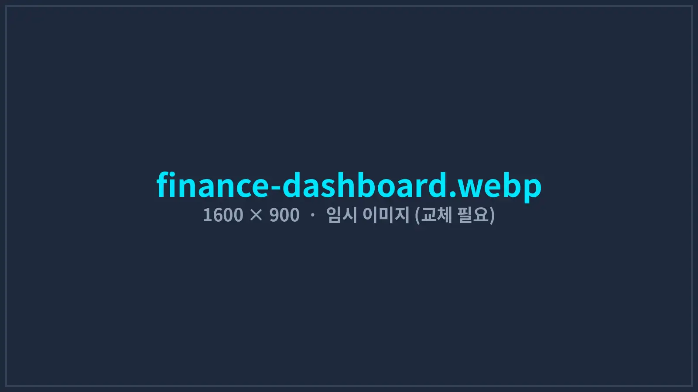
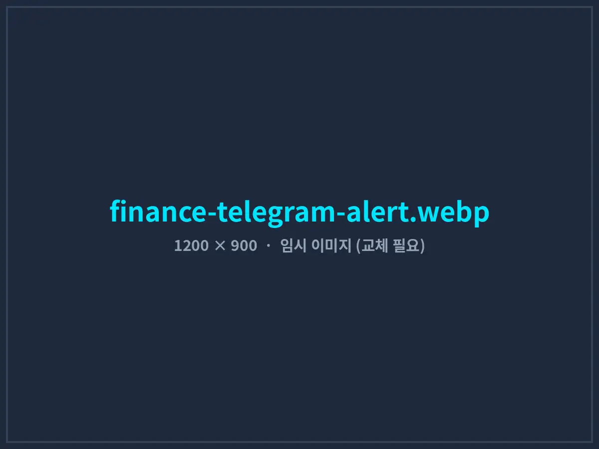
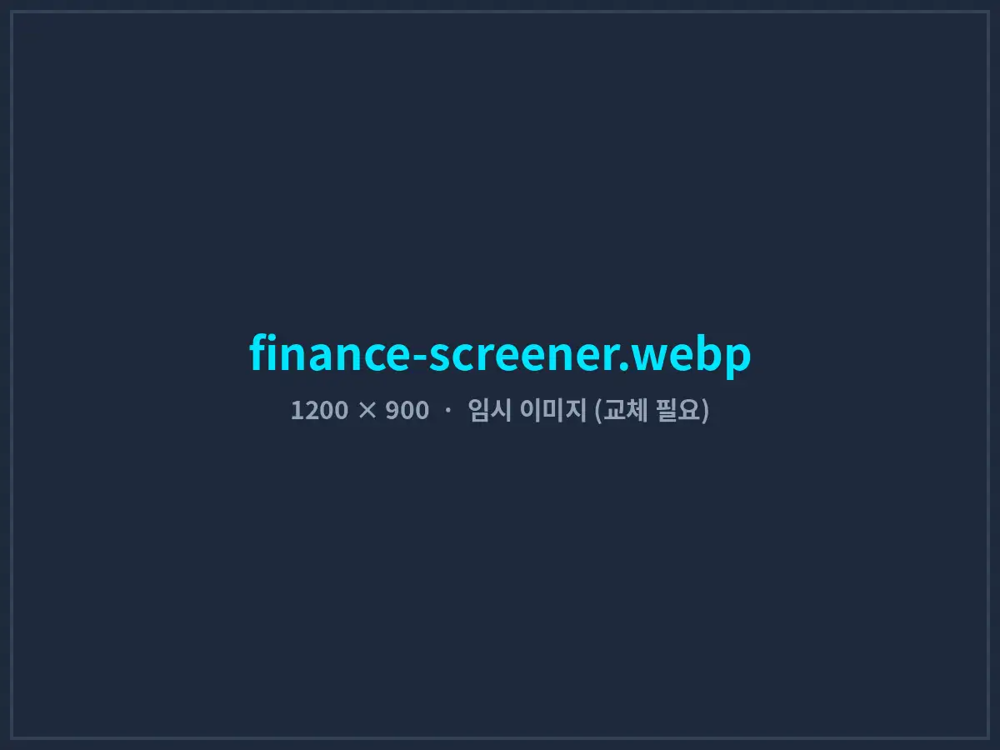

투자법인의 국내·미국 주식 매매 규칙을 키움증권 API 자동매매로
낮에는 국내장, 밤에는 미국장. 트레이더 3명이 교대로 화면을 지키던 방식을, 정해진 전략과 리스크 규칙을 그대로 집행하는 자동매매 시스템으로 바꿨습니다. 사람은 전략을 고민하고, 반복되는 감시와 주문은 프로그램이 맡습니다.
- 고객사
- C사 (자기자본 운용 투자법인)
- 운용 인력
- 트레이더 3명
- 구축 기간
- 2025.09 – 2026.01 (18주)
- 대상 시장
- 국내 주식 · 미국 주식(NYSE·NASDAQ)
- 연동 API
- 키움증권 REST · WebSocket
- 개발 환경
- C# .NET 8 · WebView2 · SQL Server

01도입 배경: 규칙은 있는데, 지켜지지 않았다
C사는 법인 자기자본으로 국내 주식과 미국 주식을 운용하는 소형 투자법인입니다. 추세 추종 전략을 기본으로 매수 조건, 분할 매수 비율, 손절 기준이 문서로 정리되어 있었지만, 실제 주문은 트레이더가 HTS 조건검색과 엑셀 시세표를 보면서 직접 넣고 있었습니다.
문제는 시간과 사람이었습니다. 국내장(09:00–15:30)이 끝나면 한국 시간 밤 11시 30분(서머타임 기간 10시 30분)부터 새벽 6시까지 미국장이 이어집니다. 교대로 야간 근무를 서도 피로가 쌓였고, 손절 가격에 도달해도 “조금만 더 보자”며 주문을 미루는 일이 반복됐습니다.
- 주문 지연조건이 충족된 뒤 트레이더가 확인하고 주문을 넣기까지 평균 42초가 걸려, 변동성이 큰 종목에서 원하는 가격을 놓쳤습니다.
- 규칙 미준수사후 점검 결과 손절 규칙이 지켜진 비율이 약 70%에 그쳤고, 규칙을 벗어난 추가 매수도 월 평균 6건 있었습니다.
- 야간 피로미국장 감시를 위해 트레이더 1명이 주 5일 야간 근무를 섰습니다. (주 약 25시간)
- 기록 분산체결 내역, 매매 사유, 환전 기록이 HTS·엑셀·메신저에 흩어져 월간 성과 분석에 이틀이 걸렸습니다.
02시스템 구조
시세 수신, 전략 판단, 리스크 관리, 주문 실행을 분리해 설계했습니다. 특히 리스크 관리 계층은 전략보다 우선합니다. 전략이 매수 신호를 내도 비중 한도나 일일 손실 한도를 넘으면 주문이 나가지 않습니다.
- DATA실시간 체결·호가 수신 (WebSocket)
- SCREEN스크리너 · 진입 조건 판단
- RISK비중 · 손실 한도 검사
- ORDER분할 주문 · 미체결 관리
- LOGDB 기록 · 텔레그램 알림
조건 스크리너
장 시작 전 전 종목을 대상으로 추세 단계(와인스타인 스테이지 2 진입), 거래량 급증, 이동평균 정배열 조건을 계산해 감시 종목을 추립니다. 장중에는 감시 종목만 실시간으로 추적합니다.
리스크 관리 규칙
종목당 최대 비중 10%, 하루 손실이 운용 자산의 2%에 도달하면 당일 신규 진입 중단, 수익 구간에서는 추적 손절(트레일링 스톱)을 자동 적용합니다.
분할 주문 · 미체결 관리
목표 수량을 3회로 나눠 주문하고, 일정 시간 체결되지 않으면 호가를 조정해 다시 주문합니다. 같은 신호로 주문이 중복 발생하지 않도록 주문마다 고유 번호로 관리합니다.
시장 일정 자동 관리
한국·미국 휴장일과 조기 폐장일 달력을 관리하고, 미국 서머타임 시작·종료에 맞춰 운용 시간이 자동으로 바뀝니다. 장 시작 전 점검과 장 마감 후 정산도 자동으로 실행됩니다.
텔레그램 알림 · 원격 제어
체결, 손절, 오류, 일일 결산을 텔레그램으로 받습니다. 허용된 계정만 ‘전체 정지’, ‘신규 진입 중단’ 명령을 보낼 수 있어 외부에서도 즉시 대응할 수 있습니다.
실시간 관제 대시보드
국내·미국 보유 종목, 캔들 차트, 호가, 원/달러 환율, 전략별 손익을 한 화면에 표시합니다. 차트는 가볍고 빠른 Lightweight Charts로 구현했습니다.



03안전장치: 자동매매에서 가장 중요한 부분
자동매매 시스템의 사고는 대부분 전략이 아니라 예외 상황에서 발생합니다. 개발 기간의 약 3분의 1을 안전장치 구현과 검증에 사용했습니다.
- 연결 끊김 감지: 시세 수신이 5초 이상 끊기면 신규 주문을 즉시 멈추고 재연결을 시도하며, 복구 후 보유 잔고와 미체결 내역을 증권사 기준으로 다시 맞춥니다.
- 이상 가격 차단: 직전 가격 대비 비정상적으로 벗어난 시세나 주문 가격은 주문 전에 차단하고 알림을 보냅니다.
- 킬 스위치: 대시보드 버튼, 텔레그램 명령, 일일 손실 한도 도달 중 하나라도 발생하면 모든 신규 주문을 중단합니다.
- 단계적 전환: 모의투자 서버에서 6주 → 실계좌 소액(운용 자산의 5%) 4주 → 전체 전환 순서로 진행했습니다.
- API 키 보호: 앱 키와 토큰은 Windows 암호화 저장소(DPAPI)에 보관하고, 로그에는 절대 기록하지 않습니다.
04구축 과정
- 1–3주차
매매 규칙 명문화
트레이더 인터뷰와 과거 1년 매매 기록을 바탕으로, 문서에 없던 암묵적 규칙까지 포함해 진입·청산·비중 규칙 31개를 조건식으로 정리했습니다.
- 4–9주차
API 연동 · 엔진 개발 · 백테스트
키움증권 API로 국내·미국 시세 수신과 주문 기능을 개발하고, 과거 3년 일봉 데이터로 규칙을 검증했습니다. 결과가 트레이더 판단과 크게 다른 규칙 4개는 수정했습니다.
- 10–15주차
모의투자 운용
모의투자 서버에서 실제 시장과 같은 시간에 6주간 운용하며 체결 지연, 부분 체결, 서머타임 전환 등 예외 상황 18건을 수정했습니다.
- 16–18주차
실계좌 소액 → 전체 전환
운용 자산의 5%로 실계좌 운용을 시작해 문제가 없음을 확인한 뒤 전체 전략으로 확대했습니다.
05도입 성과
수동 운용 기간 12주와 자동매매 전면 전환 후 12주의 운영 지표를 비교했습니다.
※ 수익률은 전략과 시장 상황에 따라 크게 달라지므로 공개하지 않습니다. 위 지표는 규칙 집행의 정확성과 운영 효율을 측정한 것입니다.
트레이더들은 야간 근무에서 벗어나 전략 연구와 규칙 개선에 시간을 쓰게 됐습니다. 모든 주문에 ‘어떤 조건 때문에 나갔는지’가 함께 기록되기 때문에, 월간 회의에서 규칙별 성과를 데이터로 비교하며 전략을 조정합니다.
06자주 묻는 질문
키움증권 외 다른 증권사도 연동할 수 있나요?
한국투자증권 등 Open API를 제공하는 증권사라면 연동할 수 있습니다. 증권사마다 주문 방식과 제한이 달라 구조를 분리해 설계하므로, 여러 증권사 계좌를 함께 운용하는 구성도 가능합니다.
매매 전략도 만들어 주나요?
아닙니다. 고객사가 이미 가지고 있는 매매 규칙을 정확하게 코드로 옮기고 검증하는 역할을 합니다. 투자 판단이나 종목 추천은 하지 않으며, 규칙을 조건식으로 정리하는 과정은 함께 진행합니다.
PC가 꺼지거나 인터넷이 끊기면 어떻게 되나요?
연결이 끊기면 신규 주문을 멈추고 텔레그램으로 알립니다. 안정적인 운영을 위해 무정전 전원장치(UPS)와 유선 인터넷 환경을 권장하며, 필요 시 클라우드 Windows 서버에 설치해 운영할 수도 있습니다.
개인 투자자도 의뢰할 수 있나요?
네, 가능합니다. 다만 본인 명의 계좌와 본인이 정한 매매 규칙을 자동화하는 경우에 한해 개발하며, 시스템 운용에 따른 투자 결과는 사용자 책임입니다.
매매 규칙, 그대로 자동화해 드립니다
사용 중인 증권사와 매매 규칙을 알려주시면 구현 범위와 검증 계획을 제안드립니다.
본 사례는 고객사 자체 매매 규칙을 실행하는 도구 개발 사례이며, 특정 종목이나 투자 전략을 권유하지 않습니다.